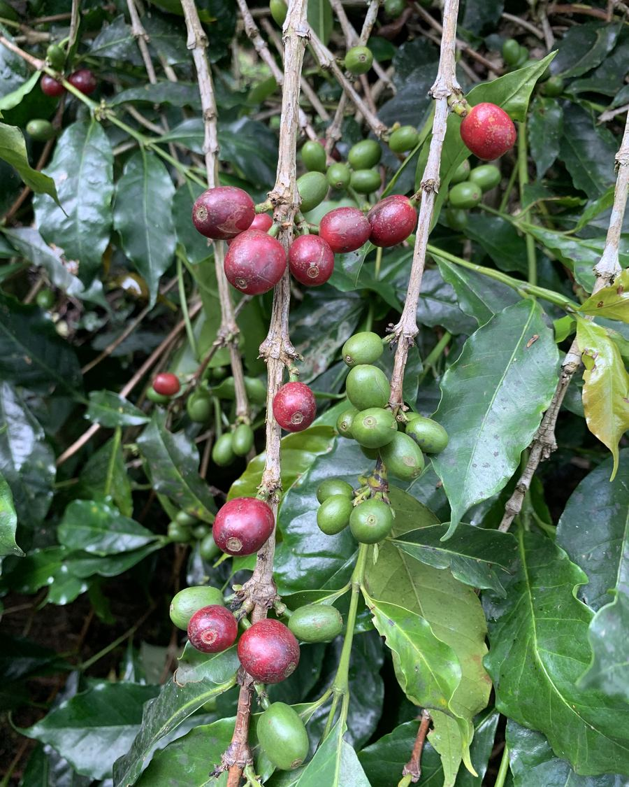

Notre engagement envers le café Luwak d'origine sauvage
L'histoire de notre précieux café Luwak commence sur les hauts plateaux de Gayo, au nord de Sumatra en Indonésie. Dans la jungle qui borde les fermes de café vit une civette, cousine de la mangouste.
Elle se nourrit des fruits mûrs qu'offre cette jungle, mais elle apprécie tout particulièrement les cerises de café, dont elle ne sélectionne que les meilleures.
Lorsqu'elle ingère ces graines, un processus naturel de digestion les laisse intactes tout en leur conférant des propriétés inattendues : l'amertume s'estompe, un bouquet de notes savoureuses s'exprime.
Produit et collecté au cœur de la jungle, le café Luwak peut maintenant être traité sur place, selon les procédés et les savoir-faire inégalés de nos agriculteurs indonésiens.
Goûtez notre café Luwak et laissez-vous porter par la richesse de ses arômes. Vous vous laisserez surprendre par une subtile touche sucrée, enrichie par des notes chocolatées avec une pointe caramélisée, suivie d'un léger goût d'anis étoilé, pour finir sur une palette fruitée venant de baies dont la civette se nourrit.
C'est un voyage aussi bien olfactif que gustatif.
Le café Luwak, richesse produite naturellement dans la jungle, a trop été exploité aux seules fins financières, au détriment du bien-être des animaux.
Nous bannissons son exploitation en cage : aucune civette n'est exploitée ni enfermée, offrant ainsi une production totalement sauvage et donc un café bien plus savoureux !
Pour ce faire, nous avons établi un partenariat avec un producteur de café Luwak qui possède une documentation rigoureuse sur la traçabilité du café. Chaque récolte de grains est garantie éthique.
Nous sommes fiers de vous offrir ce café d'exception qui respecte les animaux, les agriculteurs et l'environnement.
